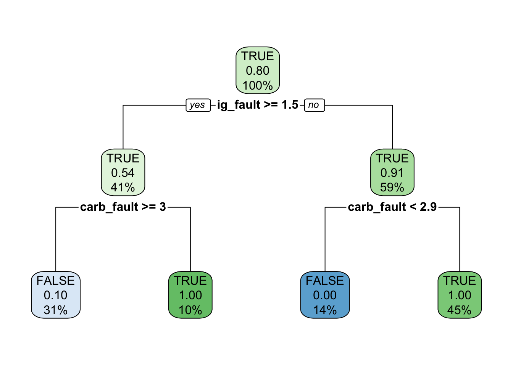

Show the code
library(readr)
library(rpart)
library(dplyr)
library(rpart.plot)
library(ggplot2)This notebook runs the rpart machine learning classification algorithm on the simulated data created by the Classification_splits.ipynb notebook. The output of the classification algorithm is saved to a file which is read in by this notebook.
There are two versions of the model here, the first one just using the simulated data, the second one applying a param argument to adjust the data prevalence to equal the prior for the y state variable.
library(readr)
library(rpart)
library(dplyr)
library(rpart.plot)
library(ggplot2)We load the simulated data, that will be passed to rpart, the R language version of CART, to generate a classification tree. Common parlance is to call this a decision tree, which creates confusion with the term decision tree as used in Decision Analysis; hence our use of the term classification tree.
The data contains the 3 observable continuous variables, and the class label, y.
setwd('/Users/jma/repos/bayes_promise/talk_2')
p_df <- readr::read_csv(file = "simulated_states.csv", show_col_types = FALSE)
spec(p_df)cols(
y = col_logical(),
ig_fault = col_double(),
carb_fault = col_double(),
door_fault = col_double()
)The output of rpart is extensive. We will need just the fraction of the y values that appear in each leaf node. This function extracts those fractions to form the conditional probability table (CPT) for the influence diagram.
build.cpt <- function(c_tree, i1= 4, i2=10) {
# I1, i2 are the columns containing the connectives '<" and '>="
rules <- rpart.rules(c_tree)
# TODO verify this node name assignment
rules[["node"]] <- row.names(rules) # row.names(tree_df)[unique(classification_tree$where)]
# Find the correspondence of rules to the frame rownames
# NOte the difference from the previous cell.
# See https://www.r-bloggers.com/2022/10/understanding-leaf-node-numbers-when-using-rpart-and-rpart-rules/
print(rules)
# Use the rules features to create a cpt for P( y | features )
# order the features.
# features <- obs
# For now assume one leaf node per CPT element, and binary y and features.
# Find all features used in splits.
obs <- unique(c(rules[[i1-1 ]] , rules[[i2-1]])) # relevant_features
cat( obs[1], obs[[2]], '\n')
ar_names = list(c("TRUE", "FALSE"),c("TRUE", "FALSE"),c("TRUE", "FALSE"))# list(rep(c("TRUE", "FALSE"), 1+length(relevant_features)))
CPT = array(NA, dim=c(2,2,2), dimnames=ar_names)
# mappings from rule labels to matrix entries
m = list(">=" = "TRUE", "< "="FALSE")
for (irow in 1:nrow(rules)) {
v1 <- rules[[irow, i1]]
v2 <- rules[[irow, i2]]
cat(v1,v2, '\n') # check the connectives
# cat(as.numeric(rules[["node"]][irow]), m[[v1]],m[[v2]], '\n')
p <- as.numeric(rules[[irow, "y"]])
# cat( m[[v1]], '\n', m[[v2]], '\n' )
CPT[ "TRUE", m[[v1]], m[[v2]]] <- p
CPT["FALSE", m[[v1]], m[[v2]]] <- 1 - p
}
ar_names <- list(c("TRUE", "FALSE"),
c(obs[1], paste0("not_",obs[1])),
c(obs[2], paste0("not_",obs[2])))
dimnames(CPT) <- ar_names
CPT
}Running rpart on the full dataset. cp is the complexity parameter, used to limit the extent of the tree to just two levels.
classification_tree <- rpart(y ~ ., data = p_df, method="class", cp = 0.2)
print(summary(classification_tree))Call:
rpart(formula = y ~ ., data = p_df, method = "class", cp = 0.2)
n= 1000
CP nsplit rel error xerror xstd
1 0.4205817 0 1.00000000 1.0000000 0.03517295
2 0.2930649 1 0.57941834 0.6107383 0.03151672
3 0.2013423 2 0.28635347 0.3020134 0.02417505
4 0.2000000 3 0.08501119 0.1767338 0.01908252
Variable importance
carb_fault ig_fault door_fault
72 27 1
Node number 1: 1000 observations, complexity param=0.4205817
predicted class=TRUE expected loss=0.447 P(node) =1
class counts: 447 553
probabilities: 0.447 0.553
left son=2 (444 obs) right son=3 (556 obs)
Primary splits:
ig_fault < 1.351899 to the right, improve=111.914000, (0 missing)
carb_fault < 3.548148 to the left, improve= 16.913900, (0 missing)
door_fault < 4.210611 to the right, improve= 5.572256, (0 missing)
Surrogate splits:
door_fault < 3.356913 to the left, agree=0.561, adj=0.011, (0 split)
carb_fault < 1.534598 to the left, agree=0.559, adj=0.007, (0 split)
Node number 2: 444 observations, complexity param=0.2013423
predicted class=FALSE expected loss=0.2882883 P(node) =0.444
class counts: 316 128
probabilities: 0.712 0.288
left son=4 (332 obs) right son=5 (112 obs)
Primary splits:
carb_fault < 2.961264 to the right, improve=112.750500, (0 missing)
door_fault < 3.550061 to the right, improve= 5.258383, (0 missing)
ig_fault < 1.575922 to the right, improve= 4.697824, (0 missing)
Surrogate splits:
door_fault < 3.550061 to the right, agree=0.757, adj=0.036, (0 split)
ig_fault < 1.356784 to the right, agree=0.752, adj=0.018, (0 split)
Node number 3: 556 observations, complexity param=0.2930649
predicted class=TRUE expected loss=0.2356115 P(node) =0.556
class counts: 131 425
probabilities: 0.236 0.764
left son=6 (131 obs) right son=7 (425 obs)
Primary splits:
carb_fault < 2.934514 to the left, improve=200.269800, (0 missing)
door_fault < 4.17123 to the right, improve= 3.607937, (0 missing)
ig_fault < 1.16505 to the left, improve= 1.084542, (0 missing)
Surrogate splits:
ig_fault < 0.2966776 to the left, agree=0.768, adj=0.015, (0 split)
Node number 4: 332 observations
predicted class=FALSE expected loss=0.0813253 P(node) =0.332
class counts: 305 27
probabilities: 0.919 0.081
Node number 5: 112 observations
predicted class=TRUE expected loss=0.09821429 P(node) =0.112
class counts: 11 101
probabilities: 0.098 0.902
Node number 6: 131 observations
predicted class=FALSE expected loss=0 P(node) =0.131
class counts: 131 0
probabilities: 1.000 0.000
Node number 7: 425 observations
predicted class=TRUE expected loss=0 P(node) =0.425
class counts: 0 425
probabilities: 0.000 1.000
n= 1000
node), split, n, loss, yval, (yprob)
* denotes terminal node
1) root 1000 447 TRUE (0.44700000 0.55300000)
2) ig_fault>=1.351899 444 128 FALSE (0.71171171 0.28828829)
4) carb_fault>=2.961264 332 27 FALSE (0.91867470 0.08132530) *
5) carb_fault< 2.961264 112 11 TRUE (0.09821429 0.90178571) *
3) ig_fault< 1.351899 556 131 TRUE (0.23561151 0.76438849)
6) carb_fault< 2.934514 131 0 FALSE (1.00000000 0.00000000) *
7) carb_fault>=2.934514 425 0 TRUE (0.00000000 1.00000000) *One the data is run through two levels of splits, first for ‘ignition’ and then for ‘carb’, the leaf nodes are almost perfect predictors for the class. rpart determines the best thresholds at which to create splits, discretizing the features for use in the CPT. It does the parameter estimation necessary to create the CPT from the continuous features, including excluding features, eg. door that are irrelevant to prediction.
rpart.plot(classification_tree)We’ll use the leaf nodes to derive the CPT predictive probabilities for the influence diagram model.
# print(paste("Leaf: ", unique(classification_tree$where)))
leaf_nodes <- classification_tree$frame %>% filter( var == '<leaf>')
leaf_nodes var n wt dev yval complexity ncompete nsurrogate yval2.V1
1 <leaf> 332 332 27 1 0.2 0 0 1.00000000
2 <leaf> 112 112 11 2 0.2 0 0 2.00000000
3 <leaf> 131 131 0 1 0.2 0 0 1.00000000
4 <leaf> 425 425 0 2 0.2 0 0 2.00000000
yval2.V2 yval2.V3 yval2.V4 yval2.V5 yval2.nodeprob
1 305.00000000 27.00000000 0.91867470 0.08132530 0.33200000
2 11.00000000 101.00000000 0.09821429 0.90178571 0.11200000
3 131.00000000 0.00000000 1.00000000 0.00000000 0.13100000
4 0.00000000 425.00000000 0.00000000 1.00000000 0.42500000View the rules that generate the leaf nodes.
rpart.plot::rpart.rules(classification_tree) y
0.00 when ig_fault < 1.4 & carb_fault < 2.9
0.08 when ig_fault >= 1.4 & carb_fault >= 3.0
0.90 when ig_fault >= 1.4 & carb_fault < 3.0
1.00 when ig_fault < 1.4 & carb_fault >= 2.9build.cpt(classification_tree, i2=8) y .1 .2 .3 .4 .5 .6 .7 node
0.00 when ig_fault < 1.4 & carb_fault < 2.9 6
0.08 when ig_fault >= 1.4 & carb_fault >= 3.0 4
0.90 when ig_fault >= 1.4 & carb_fault < 3.0 5
1.00 when ig_fault < 1.4 & carb_fault >= 2.9 7
ig_fault carb_fault
< <
>= >=
>= <
< >= , , carb_fault
ig_fault not_ig_fault
TRUE 0.08 1
FALSE 0.92 0
, , not_carb_fault
ig_fault not_ig_fault
TRUE 0.9 0
FALSE 0.1 1Since the class prevalence—the fraction of y values does not match the prior probability, we need to adjust the classification tree based on the prior. rpart has this ability by re-weighting the data used to determine the node splits. It lets one specify a prior via the param argument. Alternatively the same computation can be done by adjusting the joint probability for features and class variables, that can be recovered from the classification tree structure. The ability to estimate the full joint from the tree construction is characteristic of the Bayesian nature of the algorithm.
p_lemon <- 0.2
c_w_prior_tree <- rpart(y ~ ., data = p_df, method="class", parms = list(prior = c(p_lemon,
1 - p_lemon)), cp = 0.2)
rpart.plot(c_w_prior_tree)
build.cpt(c_w_prior_tree, i2=8) y .1 .2 .3 .4 .5 .6 .7 node
0.00 when ig_fault < 1.5 & carb_fault < 2.9 6
0.10 when ig_fault >= 1.5 & carb_fault >= 3.0 4
1.00 when ig_fault < 1.5 & carb_fault >= 2.9 7
1.00 when ig_fault >= 1.5 & carb_fault < 3.0 5
ig_fault carb_fault
< <
>= >=
< >=
>= < , , carb_fault
ig_fault not_ig_fault
TRUE 0.1 1
FALSE 0.9 0
, , not_carb_fault
ig_fault not_ig_fault
TRUE 1 0
FALSE 0 1